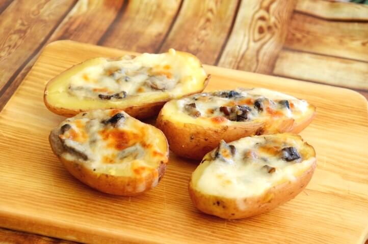

Arenadikos Recipe
Arenadkos Recipe:

Boiled potato "Boats" with meat patty "Luguagge"
This is a recipe for one of my favourite mom dishes,
in it we will make a cut out poato boats with meat patties
on them
This one takes a bit of elbow grease, make sure you have a
proper tool with which you can empty a half potato.
lets ge to it.
Ingredients:
- Potatos cut in half
- Olive oil
- Grined meat
- Cuman
- Salt
- Pepper
Steps:
- Cut out the potato halves into boats
- Mix the meat and spices and make pattys
- Fry the patties in olive oil for a minute of two and take out to rest
- Fry the half boats face down until brown than face up with the pattys on them
- Flip over and fill the pan with water
- Get to boil point lower the fire, add seasoning and let cook
- Finally flip the boats back